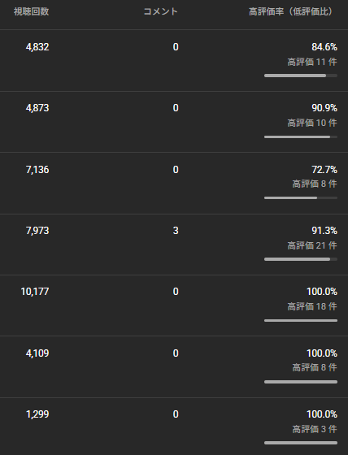

うーん、あまりにも新動画の案が思いつかない。
そんなときふとドラレコ動画の転載が脳裏に浮かんだ。
実際どうなのか
実際に検証してみよう。
ああいう動画は短時間で大量に量産できる。
勉強の合間合間で作っていこう。
その前にみんな気になるのは法的な問題だろう。
こういうときはGemini君だ。
Gemini の回答
YouTube上のドラレコ動画（他人が投稿したもの）を、許可なく自分のチャンネルやSNSに転載する場合、前述したプライバシー等の問題に加え、**「著作権法」および「YouTubeの規約」**に関する深刻なリスクが発生します。
「他人の動画を勝手に使う」ことによる具体的なリスクは以下の通りです。
1. 著作権侵害（民事・刑事）
ドラレコ映像は「単なる記録」に見えますが、撮影者が場所を選び、編集し、テロップや音声を加えている場合、**「著作物」**として保護される可能性が非常に高いです。
著作権侵害の責任: 権利者から動画の削除、広告収益の返還、あるいは損害賠償を請求される可能性があります。
刑事罰: 悪質な場合は「10年以下の懲役」や「1000万円以下の罰金」が科される可能性もあります。
2. YouTubeアカウントへのペナルティ
YouTubeは無断転載に対して非常に厳しいシステム（Content IDなど）を持っています。
著作権ストライク（警告）: 権利者から削除要請（テイクダウン）を受けると、アカウントに「警告」がつきます。
アカウントの停止: 警告が3回積み重なると、チャンネルが永久に停止され、新しいチャンネルを作成することも禁止されます。
収益化の剥奪: 他人のコンテンツを再利用していると見なされると、「再利用されたコンテンツ」という規約違反により、チャンネル全体の収益化が停止されるリスクがあります。
3. 「引用」として認められるハードルは高い
「引用なら大丈夫」と考える人もいますが、
日本の法律やYouTubeのガイドラインにおいて「引用」が成立するには厳しい条件があります。
主従関係: 自分の解説や批評がメイン（主）であり、転載動画がその補足（従）であること。
必然性: その動画を使わなければ説明できない理由があること。
改変の禁止: 勝手にBGMをつけたり、テロップを消したりすることは「同一性保持権」の侵害になります。
※単に「まとめ動画」として繋げたり、少しコメントを入れたりする程度では、多くの場合「無断転載」と判断されます。
4. 晒し系チャンネル特有のリスク
ドラレコ動画を「DQN運転」などとして晒す場合、動画の元々の権利者（撮影者）だけでなく、
映っている当事者からも訴えられるダブルのリスクがあります。
元動画の投稿者: 「俺の動画を勝手に金稼ぎに使うな」と著作権で訴える。
動画に映っている人: 「プライバシー侵害」「名誉毀損」で訴える。
安全に利用するための対策
もしドラレコ動画を扱いたい場合は、以下の対応が必須です。
必ず許可を取る: Twitter（X）やYouTubeのコメント欄から連絡し、使用許可（ライセンス）を得る。
公式の提供窓口を利用する: 一部のドラレコまとめチャンネルは、ユーザーから投稿を募集しています。
そのような正規のルートで入手した動画以外は使わないのが賢明です。
引用のルールを徹底する: 専門家の解説を加えるなど、独自の付加価値をメインにし、出典を明記する（ただし、これでも権利者が「NO」と言えばYouTube上では削除対象になります）。
結論として、YouTube上の他人のドラレコ動画を無許可で転載することは、
アカウント削除や法的トラブルに直結する非常にハイリスクな行為です。
だそうだ。そら無断転載なんてそんなもんだ。
結果
長ったらしく何か書いていてもだめだろう。
早速結果だ。投稿本数は7本。

▲ 結果
再生数・高評価率は結構いい感じだ。
登録者は4増加だ。再生数のわりに少ない。
収益の推定額は収益化していないから推定の収益になるが、
4000~2000円程度になるそうだ。
こんな動画だけ挙げていて収益化できるかは知らないが。
登録者は残念なことに4人しか増えなかった。
次の動画を期待させておけばどうにかなるかもしれない。